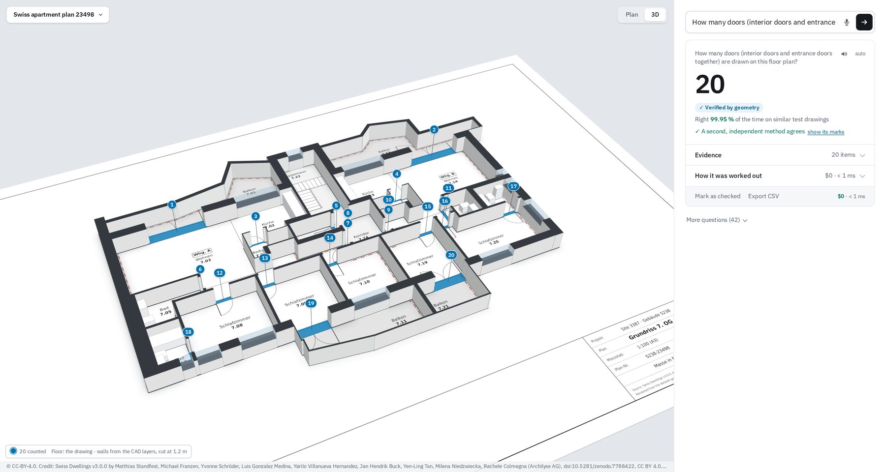
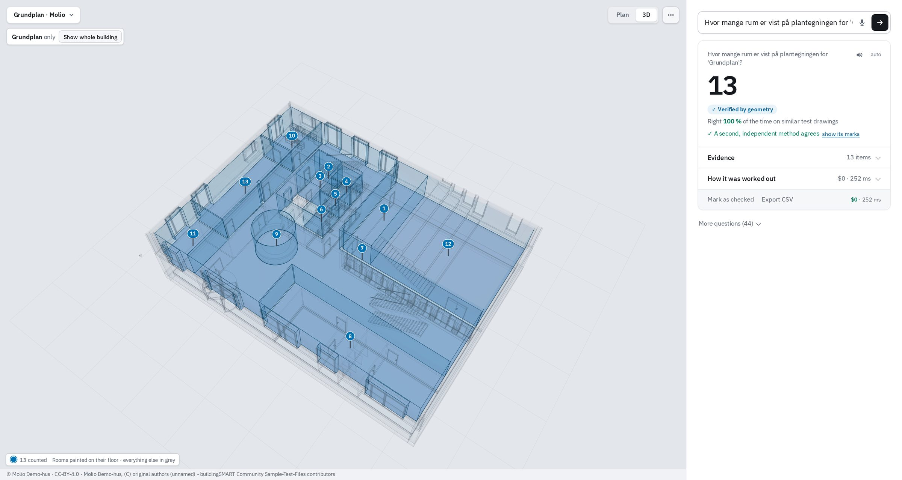
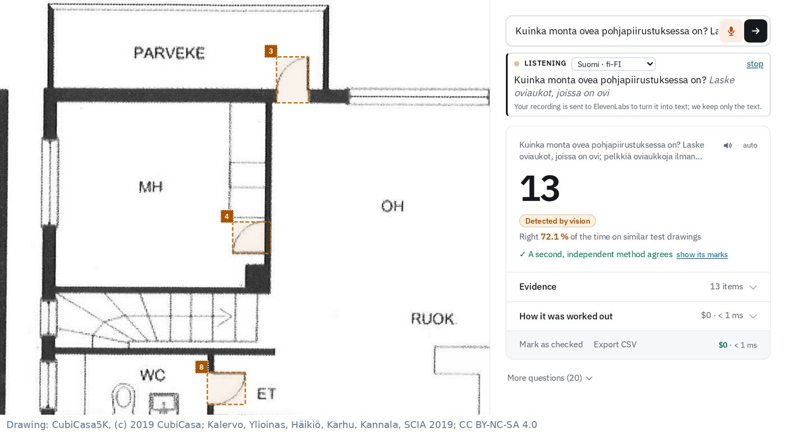
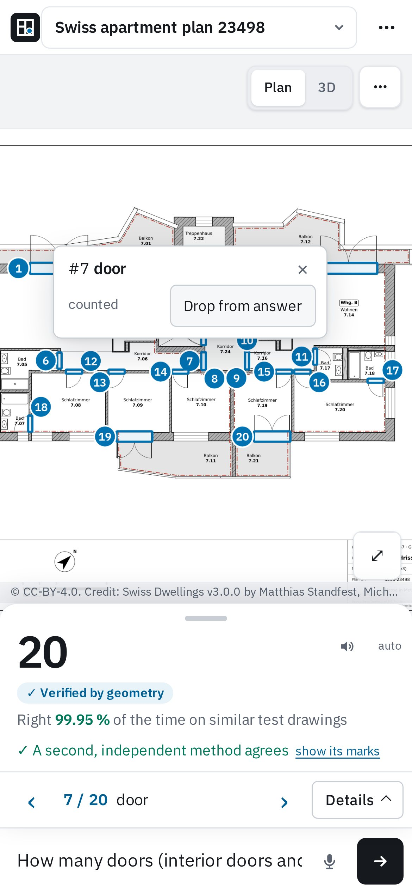
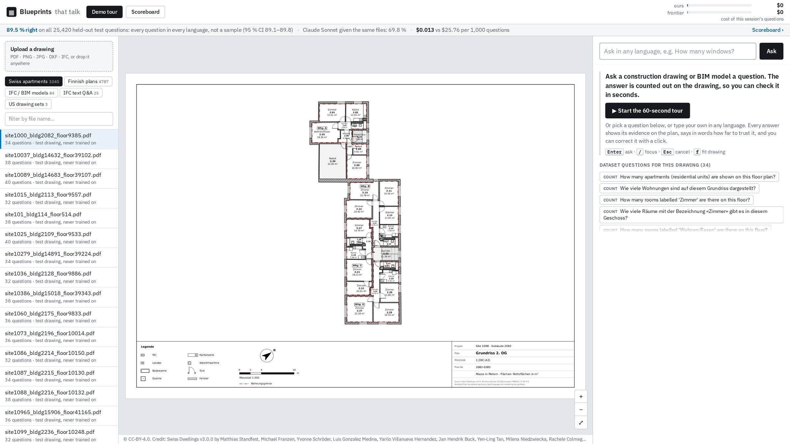
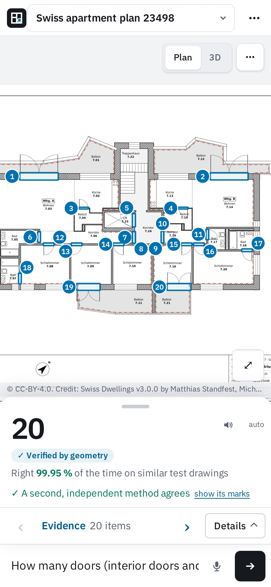

So we count it out on the drawing.
“How many doors?” 20, each one numbered. Untick one and the total changes.

Drawing: Swiss Dwellings v3.0.0, M. Standfest et al. (Archilyse AG), doi:10.5281/zenodo.7788422, CC BY 4.03
Ask a construction drawing a question. Get the answer, with its proof drawn on the drawing.

Five models were asked the net floor area of one apartment. Five different answers. None is right.
“How many doors?” 20, each one numbered. Untick one and the total changes.
“How many rooms?”, asked in Danish. 13, each painted on its own floor.

A scanned Finnish plan, asked in Finnish: 13 doors, each one boxed. Phones get a quick-ask view.


New models plug in behind the same proof. Each correction trains our own models.

Toivo and Rene · github.com/Zawaer/datum · MIT


| Ours, by source | questions | right | when answered | Sonnet + files |
|---|---|---|---|---|
| Swiss plans, counts | 5,580 | 99.96 % | 99.96 % | 81.5 % |
| Swiss plans, room areas | 2,634 | 99.92 % | 99.92 % | 79.6 % |
| IFC models, all types | 600 | 100 % | 100 % | 91–98 % |
| Finnish scans, counts | 16,496 | 85.1 % | 93.4 % | 63.6 % |
| IFC-Bench free text | 110 | 38.2 % | 41.1 % | 9.1 % |
| All | 25,420 | 90.0 % | 95.8 % | 69.8 % |
runs/router_full_test_v7.runs/baseline_*_full400.jsonl.docs/RESULTS.md, analysis/run_all.sh.python eval.py --solver router --split test --judgeanalysis/run_all.sh